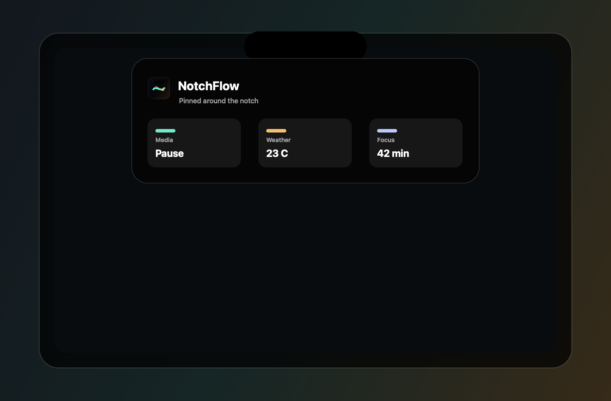

Experience
Three panel moments, not a wall of text.
NotchFlow is presented as a small stack of focused screenshots: compact status, expanded modules, and settings control.
Screenshot mode
Switch the product surface.
Each state has one job, so the page can stay quiet while the product image carries the explanation.
